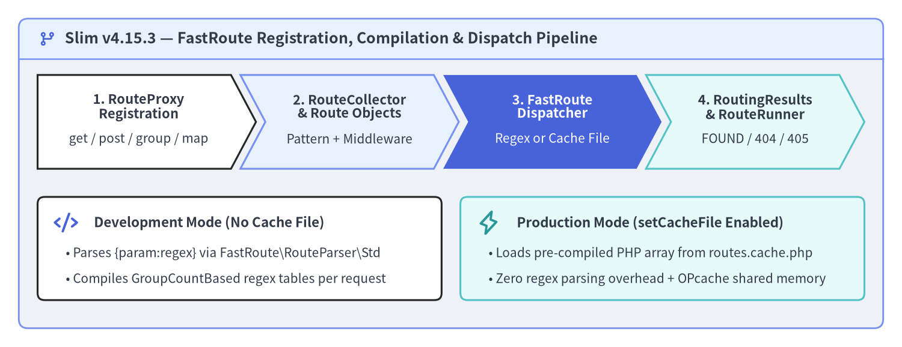
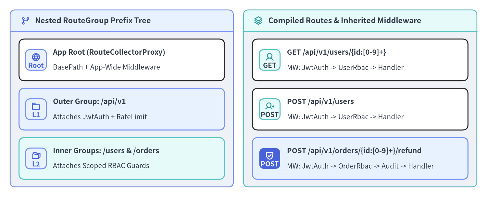

FastRoute Patterns, Groups & Caching
Slim v4.15.3 delegates URL pattern parsing and regular-expression dispatching to Nikic FastRoute (nikic/fast-route), wrapping it behind PSR-7 and PSR-15 abstractions in Slim\Routing\RouteCollectorProxy, RouteCollector, RouteGroup, Route, and FastRouteDispatcher. Understanding how Slim registers routes, compiles placeholder regular expressions, composes nested route groups, generates reverse URLs, and caches compiled dispatch tables allows you to scale from a handful of endpoints to hundreds of routes with zero runtime regex-compilation overhead.

Source Code
from drawlib.canvas import save, setup
from drawlib.icons import phosphor
from drawlib.shapes import rectangle
from drawlib.smartarts import ChevronProcess, Panel
from drawlib.styles import Styles
from drawlib.text import text
setup(width=192, height=74, dpi=150)
outer = Panel(
"Slim v4.15.3 — FastRoute Registration, Compilation & Dispatch Pipeline",
style=Styles.Neutral.patch(shape_r=2.0),
header_style=Styles.PrimaryNeutral.patch(shape_line_width=1.2),
text_style=Styles.DarkBold.patch(text_size=12.0),
icon=phosphor.git_branch,
icon_style=Styles.PrimaryBold,
header_variant="filled",
header_height=8.5,
)
outer.draw((4.0, 4.0), width=184.0, height=66.0)
proc = ChevronProcess(
style=Styles.White,
text_style=Styles.DarkBold.patch(text_size=10.5),
description_style=Styles.Dark.patch(text_size=10.0),
corner_angle=62.0,
spacing=2.0,
flat_left_end=True,
)
proc.add(
"1. RouteProxy\nRegistration",
description="get / post / group / map",
style=Styles.White,
)
proc.add(
"2. RouteCollector\n& Route Objects",
description="Pattern + Middleware",
style=Styles.PrimaryNeutral,
)
proc.add(
"3. FastRoute\nDispatcher",
description="Regex or Cache File",
style=Styles.PrimaryFlat,
text_style=Styles.WhiteBold.patch(text_size=10.5),
description_style=Styles.White.patch(text_size=10.0),
)
proc.add(
"4. RoutingResults\n& RouteRunner",
description="FOUND / 404 / 405",
style=Styles.SecondaryNeutral,
)
proc.draw(xy=(8.0, 38.0), width=176.0, height=20.0)
rectangle((51.0, 21.0), width=86.0, height=22.0, style=Styles.White.patch(shape_r=1.5))
phosphor.code((14.0, 26.5), width=5.2, style=Styles.PrimaryBold)
text(
(20.0, 26.5),
"Development Mode (No Cache File)",
style=Styles.DarkBold.patch(text_size=10.8, halign="left"),
)
text(
(14.0, 20.0),
"• Parses {param:regex} via FastRoute\\RouteParser\\Std",
style=Styles.Dark.patch(text_size=10.0, halign="left"),
)
text(
(14.0, 14.5),
"• Compiles GroupCountBased regex tables per request",
style=Styles.Dark.patch(text_size=10.0, halign="left"),
)
rectangle((141.0, 21.0), width=86.0, height=22.0, style=Styles.SecondaryNeutral.patch(shape_r=1.5))
phosphor.lightning((104.0, 26.5), width=5.2, style=Styles.SecondaryBold)
text(
(110.0, 26.5),
"Production Mode (setCacheFile Enabled)",
style=Styles.DarkBold.patch(text_size=10.8, halign="left"),
)
text(
(104.0, 20.0),
"• Loads pre-compiled PHP array from routes.cache.php",
style=Styles.Dark.patch(text_size=10.0, halign="left"),
)
text(
(104.0, 14.5),
"• Zero regex parsing overhead + OPcache shared memory",
style=Styles.Dark.patch(text_size=10.0, halign="left"),
)
save()
Route Registration on RouteCollectorProxy
Both Slim\App and nested RouteCollectorProxy instances expose Slim\Interfaces\RouteCollectorProxyInterface. Every route registration method delegates to RouteCollector::map(), returning a Slim\Interfaces\RouteInterface instance that can be further configured with a route name, route-level middleware, default arguments, or a custom invocation strategy:
Method Signature on RouteCollectorProxyInterface |
Matched HTTP Verbs | Return Type & Primary Use Case |
|---|---|---|
get(string $pattern, $callable) |
GET (and HEAD automatically) |
RouteInterface — Read-only resource retrieval endpoints |
post(string $pattern, $callable) |
POST |
RouteInterface — Resource creation or command execution |
put(string $pattern, $callable) |
PUT |
RouteInterface — Idempotent full resource replacement |
patch(string $pattern, $callable) |
PATCH |
RouteInterface — Partial resource modification |
delete(string $pattern, $callable) |
DELETE |
RouteInterface — Resource deletion |
options(string $pattern, $callable) |
OPTIONS |
RouteInterface — CORS preflight and capability discovery |
any(string $pattern, $callable) |
GET, POST, PUT, PATCH, DELETE, OPTIONS |
RouteInterface — Catch-all or webhook endpoints accepting any standard verb |
map(array $methods, string $pattern, $callable) |
Exact uppercase array (e.g., ['GET', 'POST']) |
RouteInterface — Multi-verb handlers or custom WebDAV/HTTP verbs |
redirect(string $from, $to, int $status = 302) |
GET (and HEAD) |
RouteInterface — Immediate 302/301 redirect to a URL string, UriInterface, or named route |
[!NOTE] Automatic
HEADSupport (RFC 2616 Compliance): InSlim\Routing\FastRouteDispatcher, whenever an incomingHEADrequest does not match an explicitHEADroute, Slim automatically dispatches it against registeredGETroutes. Furthermore,App::handle()replaces the outgoingResponseInterfacebody with a fresh empty stream created viaStreamFactoryInterface::createStream()soHEADresponses preserve all status codes and headers (Content-Type,Content-Length,Cache-Control) while transmitting an empty payload.
<?php
declare(strict_types=1);
use App\Action\User\CreateUserAction;
use App\Action\User\DeleteUserAction;
use App\Action\User\GetUserAction;
use App\Action\User\UpdateUserAction;
use Psr\Http\Message\ResponseInterface as Response;
use Psr\Http\Message\ServerRequestInterface as Request;
use Slim\App;
return static function (App $app): void {
// Standard REST verbs mapped to Single-Action Controllers
$app->get('/users/{id:[0-9]+}', GetUserAction::class)->setName('users.show');
$app->post('/users', CreateUserAction::class)->setName('users.create');
$app->put('/users/{id:[0-9]+}', UpdateUserAction::class)->setName('users.replace');
$app->patch('/users/{id:[0-9]+}', UpdateUserAction::class)->setName('users.update');
$app->delete('/users/{id:[0-9]+}', DeleteUserAction::class)->setName('users.delete');
// Multi-verb registration via map()
$app->map(['GET', 'POST'], '/webhooks/stripe', [StripeWebhookController::class, 'handle'])
->setName('webhooks.stripe');
// Permanent 301 redirect from legacy path to a named route or URL
$app->redirect('/legacy-docs', '/docs/v4', 301);
// Health check responding to GET (and automatically to HEAD)
$app->get('/healthz', function (Request $request, Response $response): Response {
$response->getBody()->write('{"status":"ok"}');
return $response->withHeader('Content-Type', 'application/json');
})->setName('system.health');
};
FastRoute Placeholder & Regex Syntax
Slim route patterns use FastRoute's FastRoute\RouteParser\Std syntax. Placeholders are enclosed in curly braces {name} and optional segments are enclosed in square brackets [...]:
| Pattern Feature | Example Route Pattern | Matched URI Examples | Extracted $args Key-Values |
|---|---|---|---|
Default Placeholder ([^/]+) |
/users/{username} |
/users/alice |
['username' => 'alice'] |
| Numeric Regex Constraint | /users/{id:[0-9]+} |
/users/42 (/users/abc -> 404) |
['id' => '42'] |
| Slug / UUID Constraint | /articles/{slug:[a-z0-9-]+} |
/articles/slim-4-routing |
['slug' => 'slim-4-routing'] |
| Trailing Optional Segment | /users[/{id:[0-9]+}] |
/users or /users/42 |
[] or ['id' => '42'] |
| Nested Optional Segments | /archive[/{year:[0-9]{4}}[/{month:[0-9]{2}}]] |
/archive, /archive/2026, /archive/2026/11 |
['year' => '2026', 'month' => '11'] |
| Unlimited Trailing Segments | /files/{params:.*} |
/files/docs/2026/report.pdf |
['params' => 'docs/2026/report.pdf'] |
[!IMPORTANT] Rules for Regex Placeholders: Inside
{name:pattern}, you cannot use capturing parentheses(...)because FastRoute relies on positional regex capture groups internally; use non-capturing groups(?:...)instead (for example,{format:(?:json|xml)}). Also avoid quantifier braces inside[...]optional segments unless attached to a placeholder ({year:[0-9]{4}}), as FastRoute treats[and]outside{...}as optional route segment delimiters.
<?php
declare(strict_types=1);
use Psr\Http\Message\ResponseInterface as Response;
use Psr\Http\Message\ServerRequestInterface as Request;
use Slim\App;
return static function (App $app): void {
// 1. Nested optional segments for blog archives
$app->get(
'/archive[/{year:[0-9]{4}}[/{month:[0-9]{2}}]]',
function (Request $request, Response $response, array $args): Response {
$year = isset($args['year']) ? (int) $args['year'] : 2026;
$month = isset($args['month']) ? (int) $args['month'] : null;
$payload = json_encode(['year' => $year, 'month' => $month], JSON_THROW_ON_ERROR);
$response->getBody()->write($payload);
return $response->withHeader('Content-Type', 'application/json');
}
)->setName('archive.index');
// 2. Non-capturing alternation group for format suffixes
$app->get(
'/reports/{id:[0-9]+}.{ext:(?:json|csv|pdf)}',
function (Request $request, Response $response, array $args): Response {
$payload = json_encode([
'report_id' => (int) $args['id'],
'extension' => $args['ext'],
], JSON_THROW_ON_ERROR);
$response->getBody()->write($payload);
return $response->withHeader('Content-Type', 'application/json');
}
)->setName('reports.export');
// 3. Unlimited trailing segments for virtual filesystem paths
$app->get(
'/storage/{params:.*}',
function (Request $request, Response $response, array $args): Response {
$segments = array_values(array_filter(explode('/', $args['params']), 'strlen'));
$payload = json_encode(['segments' => $segments], JSON_THROW_ON_ERROR);
$response->getBody()->write($payload);
return $response->withHeader('Content-Type', 'application/json');
}
)->setName('storage.browse');
};
Nested Route Groups & Scoped Middleware
When building versioned APIs or multi-tenant modules, repeating /api/v1 and attaching authentication middleware to every route is error-prone. $app->group(string $pattern, $callable) creates a Slim\Routing\RouteGroup and passes a scoped RouteCollectorProxy with the group's prefix into your callback (or invokable class). Groups can be nested to arbitrary depth, and middlewares attached via $group->add() automatically wrap all routes and sub-groups declared inside that group:

Source Code
from drawlib.canvas import save, setup
from drawlib.icons import phosphor
from drawlib.smartarts import CardList, Panel
from drawlib.styles import Styles
setup(width=192, height=78, dpi=150)
left_panel = Panel(
"Nested RouteGroup Prefix Tree",
style=Styles.Neutral.patch(shape_r=2.0),
header_style=Styles.PrimaryNeutral.patch(shape_line_width=1.2),
text_style=Styles.DarkBold.patch(text_size=11.2),
icon=phosphor.git_branch,
icon_style=Styles.PrimaryBold,
header_variant="filled",
header_height=8.5,
)
left_panel.draw((4.0, 4.0), width=88.0, height=70.0)
l_xy, l_w, l_h = left_panel.get_content_box((4.0, 4.0), width=88.0, height=70.0, padding=(3.5, 3.0))
cl_left = CardList(
style=Styles.White,
text_style=Styles.DarkBold.patch(text_size=10.6),
description_style=Styles.Dark.patch(text_size=10.0),
badge_shape="rounded_rect",
badge_style=Styles.PrimaryNeutral,
badge_text_style=Styles.PrimaryBold.patch(text_size=10.0),
icon_style=Styles.PrimaryBold,
direction="vertical",
spacing=3.0,
)
cl_left.add(
"App Root (RouteCollectorProxy)",
"BasePath + App-Wide Middleware",
badge_text="Root",
icon=phosphor.globe,
)
cl_left.add(
"Outer Group: /api/v1",
"Attaches JwtAuth + RateLimit",
badge_text="L1",
icon=phosphor.folder,
style=Styles.PrimaryNeutral,
)
cl_left.add(
"Inner Groups: /users & /orders",
"Attaches Scoped RBAC Guards",
badge_text="L2",
icon=phosphor.folders,
style=Styles.SecondaryNeutral,
)
cl_left.draw(xy=l_xy, width=l_w, height=l_h)
right_panel = Panel(
"Compiled Routes & Inherited Middleware",
style=Styles.Neutral.patch(shape_r=2.0),
header_style=Styles.SecondaryNeutral.patch(shape_line_width=1.2),
text_style=Styles.DarkBold.patch(text_size=11.2),
icon=phosphor.stack,
icon_style=Styles.SecondaryBold,
header_variant="filled",
header_height=8.5,
)
right_panel.draw((96.0, 4.0), width=92.0, height=70.0)
r_xy, r_w, r_h = right_panel.get_content_box((96.0, 4.0), width=92.0, height=70.0, padding=(3.5, 3.0))
cl_right = CardList(
style=Styles.White,
text_style=Styles.DarkBold.patch(text_size=10.5),
description_style=Styles.Dark.patch(text_size=10.0),
badge_shape="rounded_rect",
badge_style=Styles.SecondaryNeutral,
badge_text_style=Styles.DarkBold.patch(text_size=10.0),
icon_style=Styles.SecondaryBold,
direction="vertical",
spacing=3.0,
)
cl_right.add(
"GET /api/v1/users/{id:[0-9]+}",
"MW: JwtAuth -> UserRbac -> Handler",
badge_text="GET",
icon=phosphor.user,
)
cl_right.add(
"POST /api/v1/users",
"MW: JwtAuth -> UserRbac -> Handler",
badge_text="POST",
icon=phosphor.user_plus,
)
cl_right.add(
"POST /api/v1/orders/{id:[0-9]+}/refund",
"MW: JwtAuth -> OrderRbac -> Audit -> Handler",
badge_text="POST",
icon=phosphor.shield_check,
style=Styles.PrimaryNeutral,
badge_style=Styles.PrimaryFlat,
badge_text_style=Styles.WhiteBold.patch(text_size=10.0),
icon_style=Styles.WhiteBold,
)
cl_right.draw(xy=r_xy, width=r_w, height=r_h)
save()
The following configuration demonstrates an outer /api/v1 group protected by JwtAuthMiddleware that nests /users and /orders sub-groups, each applying domain-specific RBAC guards and route-level audit logging:
<?php
declare(strict_types=1);
use App\Action\Order\ListOrdersAction;
use App\Action\Order\RefundOrderAction;
use App\Action\User\CreateUserAction;
use App\Action\User\GetUserAction;
use App\Middleware\AuditTrailMiddleware;
use App\Middleware\JwtAuthMiddleware;
use App\Middleware\RequireOrderAdminMiddleware;
use App\Middleware\RequireUserReadMiddleware;
use Slim\App;
use Slim\Routing\RouteCollectorProxy;
return static function (App $app): void {
$app->group('/api/v1', function (RouteCollectorProxy $v1): void {
// Inner group: /api/v1/users
$v1->group('/users', function (RouteCollectorProxy $users): void {
$users->get('/{id:[0-9]+}', GetUserAction::class)->setName('api.v1.users.show');
$users->post('', CreateUserAction::class)->setName('api.v1.users.create');
})->add(RequireUserReadMiddleware::class);
// Inner group: /api/v1/orders
$v1->group('/orders', function (RouteCollectorProxy $orders): void {
$orders->get('', ListOrdersAction::class)->setName('api.v1.orders.index');
$orders->post('/{id:[0-9]+}/refund', RefundOrderAction::class)
->setName('api.v1.orders.refund')
->add(AuditTrailMiddleware::class);
})->add(RequireOrderAdminMiddleware::class);
})->add(JwtAuthMiddleware::class);
};
Named Routes & Reverse URL Generation
Hardcoding URL strings in controllers, templates, or Location headers creates fragile coupling whenever route prefixes change. By assigning unique names with $route->setName('api.v1.users.show') and optionally setting default route arguments via $route->setArgument('version', 'v1'), you can generate URLs dynamically using Slim\Interfaces\RouteParserInterface:
RouteParserInterface Method |
BasePath Included? | Scheme & Host Included? | Example Output (basePath = '/myapp') |
|---|---|---|---|
relativeUrlFor(string $routeName, array $data = [], array $queryParams = []) |
No | No | /api/v1/users/42?fields=email |
urlFor(string $routeName, array $data = [], array $queryParams = []) |
Yes | No | /myapp/api/v1/users/42?fields=email |
fullUrlFor(UriInterface $uri, string $routeName, array $data = [], array $queryParams = []) |
Yes | Yes (from $uri) |
https://api.example.com/myapp/api/v1/users/42?fields=email |
<?php
declare(strict_types=1);
use Psr\Http\Message\ResponseInterface as Response;
use Psr\Http\Message\ServerRequestInterface as Request;
use Slim\Routing\RouteContext;
$app->post('/api/v1/users', function (Request $request, Response $response): Response {
$newUserId = '42';
// Retrieve RouteParserInterface from the current request's RouteContext
$routeParser = RouteContext::fromRequest($request)->getRouteParser();
// 1. Path including basePath: "/api/v1/users/42?expand=roles"
$locationPath = $routeParser->urlFor(
'api.v1.users.show',
['id' => $newUserId],
['expand' => 'roles']
);
// 2. Full canonical URL using the incoming request's UriInterface
$canonicalUrl = $routeParser->fullUrlFor(
$request->getUri(),
'api.v1.users.show',
['id' => $newUserId]
);
$payload = json_encode([
'id' => (int) $newUserId,
'href' => $canonicalUrl,
], JSON_THROW_ON_ERROR);
$response->getBody()->write($payload);
return $response
->withStatus(201)
->withHeader('Location', $locationPath)
->withHeader('Content-Type', 'application/json');
});
Production Route Compilation Caching
By default, FastRoute parses every route pattern and compiles its grouped regular-expression dispatch table on every request. In production deployments where route definitions are static per release, call $app->getRouteCollector()->setCacheFile($path) during bootstrap so FastRoute writes a PHP array file (<?php return [...];) once and loads it directly from OPcache shared memory on subsequent requests:
- Validation in
RouteCollector::setCacheFile(): Slim verifies that$cacheFileis a string, that if the file already exists it is readable (is_readable()), and that if it does not yet exist its parent directory is writable (is_writable(dirname($cacheFile)))—throwing a descriptiveRuntimeExceptionearly during bootstrap if filesystem permissions are misconfigured. - Deployment Cache Invalidation: Because FastRoute never regenerates the cache file while the file exists on disk, always delete
var/cache/routes.cache.php(or build into an immutable release directory) during CI/CD deployment whenever routes are added or modified.
<?php
declare(strict_types=1);
use Slim\Factory\AppFactory;
$app = AppFactory::createFromContainer($container);
// Enable compiled FastRoute caching in production environments
if (($_ENV['APP_ENV'] ?? 'production') === 'production') {
$routeCacheFile = dirname(__DIR__) . '/var/cache/routes.cache.php';
$app->getRouteCollector()->setCacheFile($routeCacheFile);
}
// Next: Learn how Slim invokes route callables and populates RouteContext
// in Invocation Strategies & RouteContext (strategies_and_context.md).
To see how Slim passes route placeholders ({id}, {slug}) into your controller methods and how middlewares inspect matched route metadata, continue to Invocation Strategies & RouteContext or explore the internal dispatcher implementation in the Slim 4 Internal Architecture and Slim 4 API Reference portals.